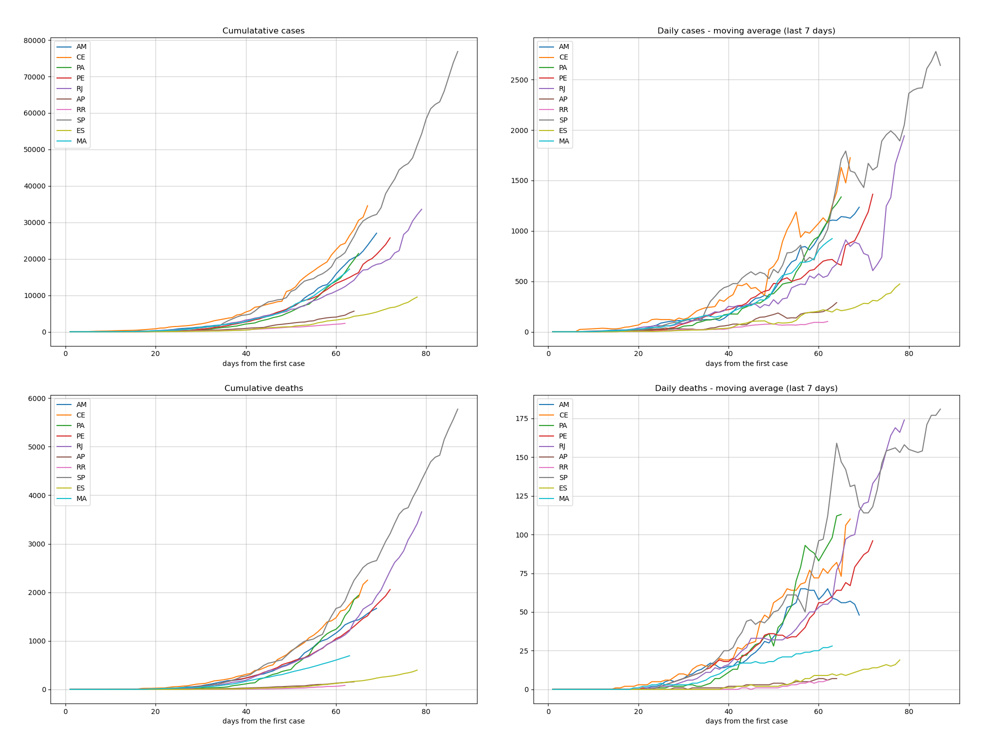
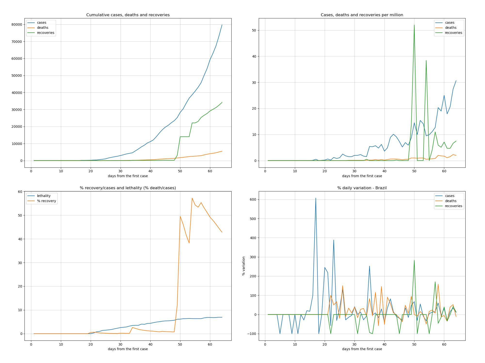
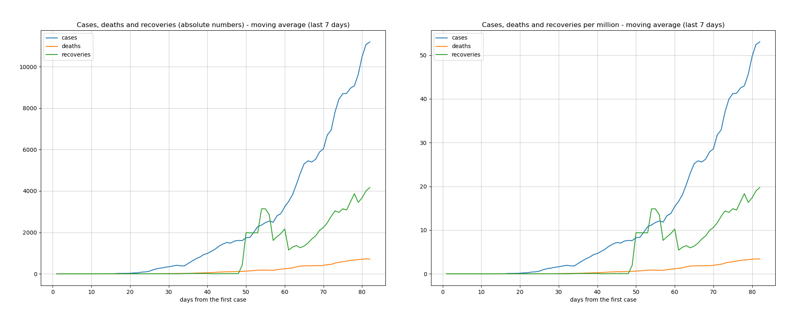

These analysis are related to Brazil Convid19 pandemic data up to 2020-05-02.
The mortality level shown in this map is defined from the moving average of the last 7 days over the mortality percentage of each state.
Move the mouse over the map for each region details.
O level of transmission on the map is defined from the moving average of the last 7 days of the cumulative cases of each state.
Move the mouse over the map for each region details.
This ranking is done from the moving avarege of the last 7 days over the mortality percentage of each state.
| state | date | day | case_day | cases | death_day | deaths | avg7_cases | avg7_deaths | avg7_perc_death | perc_death | |
|---|---|---|---|---|---|---|---|---|---|---|---|
| 1 | RJ | 2020-05-02 | 59 | 380 | 10546 | 50 | 971 | 531, | 50, | 8,93 | 9,21 |
| 2 | PE | 2020-05-02 | 52 | 811 | 8145 | 25 | 628 | 519, | 35, | 8,37 | 7,71 |
| 3 | SP | 2020-05-02 | 67 | 800 | 31174 | 75 | 2586 | 1595, | 131, | 8,37 | 8,30 |
| 4 | PB | 2020-05-02 | 45 | 108 | 1034 | 7 | 74 | 83, | 4, | 8,25 | 7,16 |
| 5 | AM | 2020-05-02 | 49 | 339 | 6062 | 25 | 501 | 346, | 30, | 8,11 | 8,26 |
| 6 | PA | 2020-05-02 | 45 | 284 | 3460 | 38 | 273 | 268, | 26, | 6,37 | 7,89 |
| 7 | CE | 2020-05-02 | 47 | 430 | 8309 | 133 | 638 | 412, | 46, | 6,25 | 7,68 |
| 8 | PR | 2020-05-02 | 52 | 45 | 1492 | 1 | 90 | 50, | 3, | 6,11 | 6,03 |
| 9 | MA | 2020-05-02 | 43 | 299 | 3805 | 20 | 224 | 242, | 17, | 5,62 | 5,89 |
| 10 | RN | 2020-05-02 | 51 | 69 | 1366 | 3 | 59 | 83, | 2, | 4,95 | 4,32 |
This ranking is done from the moving avarege of the last 7 days over the cumulative cases of each state.
| state | date | day | case_day | cases | death_day | deaths | avg7_cases | avg7_deaths | avg7_perc_death | perc_death | |
|---|---|---|---|---|---|---|---|---|---|---|---|
| 1 | SP | 2020-05-02 | 67 | 800 | 31174 | 75 | 2586 | 1595, | 131, | 8,37 | 8,30 |
| 2 | RJ | 2020-05-02 | 59 | 380 | 10546 | 50 | 971 | 531, | 50, | 8,93 | 9,21 |
| 3 | PE | 2020-05-02 | 52 | 811 | 8145 | 25 | 628 | 519, | 35, | 8,37 | 7,71 |
| 4 | CE | 2020-05-02 | 47 | 430 | 8309 | 133 | 638 | 412, | 46, | 6,25 | 7,68 |
| 5 | AM | 2020-05-02 | 49 | 339 | 6062 | 25 | 501 | 346, | 30, | 8,11 | 8,26 |
| 6 | PA | 2020-05-02 | 45 | 284 | 3460 | 38 | 273 | 268, | 26, | 6,37 | 7,89 |
| 7 | MA | 2020-05-02 | 43 | 299 | 3805 | 20 | 224 | 242, | 17, | 5,62 | 5,89 |
| 8 | ES | 2020-05-02 | 58 | 323 | 2985 | 7 | 103 | 198, | 8, | 3,37 | 3,45 |
| 9 | BA | 2020-05-02 | 58 | 230 | 3315 | 6 | 123 | 176, | 7, | 3,53 | 3,71 |
| 10 | SC | 2020-05-02 | 51 | -48 | 2346 | 4 | 52 | 162, | 1, | 2,61 | 2,22 |


